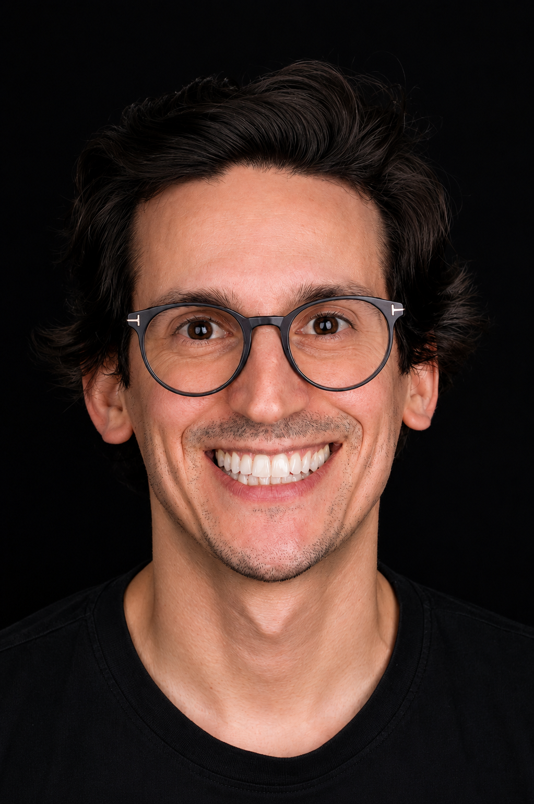

Sou o Jorge Fonseca e Sousa. Trabalho em dentisteria adesiva e reabilitação oral desde 2015. Aqui partilho o que a faculdade não chega a ensinar: as decisões, a técnica e os pormenores da clínica de todos os dias.

Enceramentos de diagnóstico, fotografia e vídeo clínico antes de cada reabilitação.
Também em dentes muito destruídos, os que parecem "impossíveis" de isolar.
Restaurações diretas em resina composta, em dentes anteriores e posteriores, incluindo recobrimento de cúspides.
Coroas, overlays e pontes em cerâmica, sobre dentes naturais e sobre implantes.
Quando o dente tem indicação para cerâmica, é essa a minha primeira opção: é um material mais resistente, mais duradouro e com um resultado mais previsível.
Se o orçamento não o permitir, a resina composta é uma alternativa válida. O paciente deve saber, no entanto, que é um material mais poroso, mais sujeito a degradação e menos durável.
É a partir delas que partilho o meu trabalho.
Desde 2015Oris Clinic, Centro Integrado de Medicina Dentária de Coimbra
Desde 2018GreatEssence, Condeixa-a-Nova
2014Mestrado Integrado em Medicina Dentária, Faculdade de Medicina da Universidade de Coimbra
2017Pós-Graduação em Dentisteria Adesiva com Resinas Compostas, CESPU
2019Lentes de contacto: planeamento e oclusão em reabilitação oral, Mollaris
2022Prótese fixa: planeamento e reabilitação estética, funcional e interdisciplinar, Sorriso Natural
2023Cirurgia mucogengival estética, periodontal e peri-implantar, Centro de Formação Fernando Almeida
2023/2024Pós-Graduação em Implantologia Oral, CESPU
2024Reabilitação sobre implantes, da cirurgia à reabilitação protética, Oriseducare